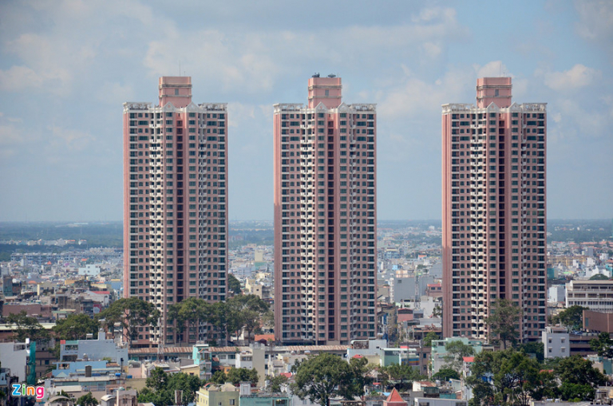
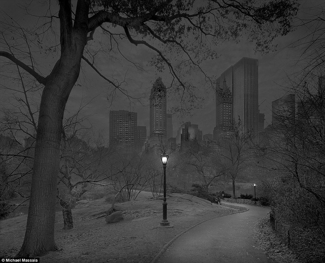
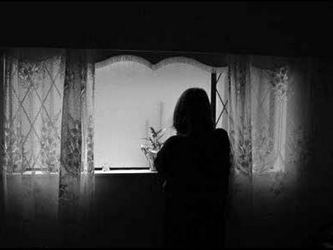

Những câu chuyện kinh dị tại Việt Nam
Là một đất nước với nền văn hóa đa dạng cùng lịch sử lâu đời, Việt Nam vẫn tồn tại những câu chuyện truyền miệng đầy ám ảnh.
Những câu chuyện này tồn tại đến tận ngày nay và có lẽ sẽ khiến không ít người lại mất ngủ vào buổi đêm. Dưới đây là vài câu chuyện đầy ma mị nổi tiếng ở Việt Nam mà đến cả người nước ngoài cũng biết.
1.Câu chuyện thứ nhất:Thuận Kiều Plaza
- Là một tòa nhà cao tầng tại Viêt Nam được xây từ những năm 1994 đến năm 1999
- Tòa nhà là tổ hợp 3 tòa tháp với độ cao lên đến 110m
- Nằm tại số 190 Hồng Bàng, phường 12, quận 5, thành phố Hồ Chí Minh
Nằm giữa lòng khu phố Hoa đầy náo nhiệt và sôi động là hình ảnh của 3 tòa nhà liên tiếp cao 33 tầng.
Tòa nhà A và B đã hoàn toàn bị bỏ hoang, trong khi tòa nhà C thì chỉ có 20 căn hộ.
Ban đầu, Thuận Kiều Plaza được xây dựng để trở thành 1 khu mua sắm, giải trí và khu căn hộ kết hợp.
Nhưng đến nay tất cả 3 tòa nhà này đều không được sử dụng. Vào những năm 80 trong khi tòa nhà đang được xây dựng, một số công nhân đã thiệt mạng do sự kém an toàn trong công tác bảo hộ.
Tuy nhiên, vì đền bù không thỏa đáng dành cho những công nhân này nên Thuận Kiều Plaza đã bị yểm bằng 1 câu thần chú của người Trung Quốc.
Từ đó, các tai nạn và vấn đề liên quan trong khu vực 100.000m vuông ấy đã bị phong tỏa.
Không chỉ thế, câu chuyện về chiếc xe taxi ở khu vực này cũng khiến người ta phải sợ hãi.
Một người lái taxi nhận đón một cô gái từ khu phức hợp này, nhưng khi anh ấy chạy xe đến nơi thì lại không có bất kì ai.
Người lái taxi đã gọi điện lại cho cô gái nhưng tất cả những gì anh ta nghe được trong điện thoại là tiếng thở nặng nề cùng tiếng hét.Vì quá sợ hãi, anh đã lái xe đi ngay lập tức.
Anh ta kể, cô gái kia giống như câu chuyện về hồn ma của một cô gái bị bạn trai sát hại trên một trang web vào năm 2005.

2.Câu chuyện thứ hai:Ma nữ ở siêu thị
- Là một siêu thị BigC ở Hải Phòng
Một cô gái đã đến BigC Hải Phòng để ăn trưa và mua một số đồ cùng cùng chiếc máy giặt.
Người giao hàng đem hàng đến nhưng người mở cửa lại là một bà cụ.
Bà cụ từ chối nhận hàng và nói không hề mua sắm gì.
Nhưng khi người giao hàng đọc tên và địa chỉ người nhận thì bà cụ lại bật khóc và nói: " Đó chính là con gái tôi. Cháu nó chết rồi cơ mà ".
Thấy lạ, nhân viên Big C đành mang hàng quay về.
Cũng theo tin đồn, sau khi sự việc xảy ra, lãnh đạo siêu thị Big C cho kiểm tra tiền tại quầy thu ngân thì thấy thiếu hụt 3 triệu đồng (tương đương số tiền bán chiếc tủ lạnh), thay vào đó là...tiền đô la âm phủ.

3.Câu chuyện thứ ba:Đi đêm
Một người đàn ông ăn nhậu say xỉn ngả nghiêng trên đường về nhà.
Tình cờ thấy một cô bé đang ngồi hí hoáy ngồi viết đáng sợ là đôi mắt của nó rất sâu và hốc mắt đen.
Nó thều thào nói: " làm mẹ cháu sảy thai nhưng giờ ông ấy chết rồi".
Ông không quan tâm lắm, đang quay lưng đi thì vướng phải cành cây và té xuống, không may đầu trúng cục đá tảng chết ngay tại chỗ.
Xác ông ta bị bùn đất lấp lên như một cái huyệt chôn.
Sau đó vang lên giọng cười bí hiểm: " Cuối cùng cũng xong rồi..."

4.Câu chuyện thứ tư:Chôn sống
Ngày xưa có một cô gái vô cùng xinh đẹp làm việc cho một gia đình giàu có.
Nhan sắc của cô khiến người chồng không thể rời mắt làm cho bà vợ đã lên cơn ghen và sai cô gái đi làm ở một nơi xa với hi vọng cô gái sẽ không quay trở về.
Nhưng khi xong việc cô lại trở về điều đó làm cho bà vợ rất tức điên bà sai người rút hết móng tay, cắt toàn bộ tóc, lông mi, cắt miệng và để chiếc miệng kéo dài đến tận mang tai, hàm răng bị kéo phăng ra, dí thanh kim loại đốt nóng người cô.
Sau đó họ chôn cô vào một trong những bức tường nhà, chỉ chừa một lỗ thông hơi nhỏ.
Bà khó ngủ và cảm giác như ai nhìn mình, quá sợ hãi bà trùm chăn và cầm tay chồng mình để trấn an.
Nhưng bàn tay ấy rất mềm mại, dính một thứ chất lỏng tanh tay và ĐÁNG SỢ LÀ NÓ HOÀN TOÀN KHÔNG CÓ MÓNG TAY...
5.Câu chuyện thứ năm:Gọi hồn
Anh ta sống trong một gia đình phải nói là tuy không giàu có nhưng hạnh phúc viên mãn.
Nhưng vào một ngày ba anh ta đột ngột qua đời, căn nhà chìm trong tang thương.
Nó không hiểu chuyện gì đang xảy ra thì mẹ nó nói: " Mẹ đang trong bếp nấu ăn thì nghe có tiếng ai gọi ba con, ba con đáp mà mẹ không để ý mà tiếp tục công việc... vậy mà thành ra như vầy".
Hai mẹ con anh ta suy sụp tinh thần nhiều ngày liền.
Nhưng cái chết quá kì lạ và đột ngột.
Không ngờ vài ngày sau chuyện đó tiếp diễn nhưng lại là mẹ anh ta.
Nhưng mẹ anh ta không trả lời lại vì đang làm dở công việc.
Người ta có nói rằng :" khi nghe được tiếng gọi mình mà lại không bắt nguồn từ đâu thì đừng bao giờ trả lời lại. Bởi có nghĩa là bạn đồng ý đi theo NÓ".

MỤC LỤC
Câu chuyện 1
Câu chuyện 2
Câu chuyện 3
Câu chuyện 4
Câu chuyện 5
Một số truyện ma ngắn
Phim kinh dị Việt Nam